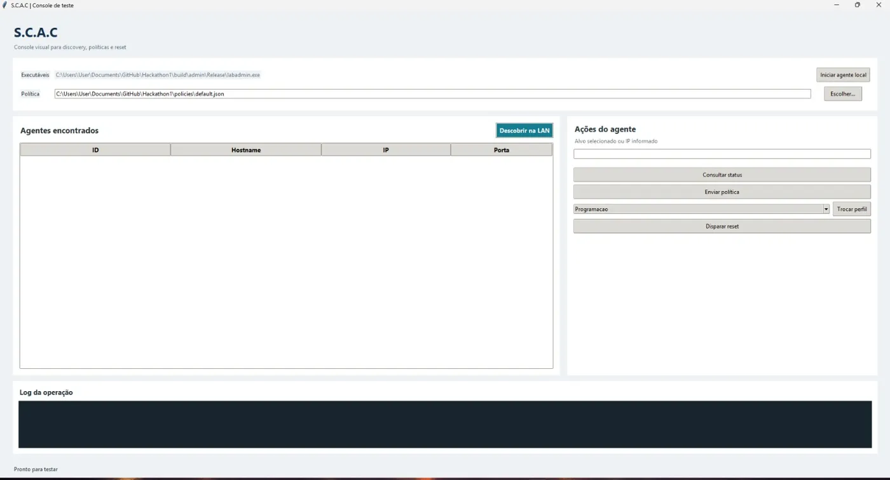

Controle o que cada computador da sua empresa pode acessar, de um só lugar.
O S.C.A.C encontra os computadores da sua rede e libera ou bloqueia sites e programas em todos eles de uma vez, de acordo com a atividade do momento: reunião, treinamento ou trabalho normal. Sem configurar máquina por máquina.
Simulação para você entender a ideia. O sistema real aplica o perfil nos computadores da sua rede.
O que muda na sua empresa
Hoje, controlar o que os computadores acessam costuma dar trabalho e depender de alguém passando em cada máquina. O S.C.A.C coloca isso em um só painel.
Sem o S.C.A.C
- Cada computador precisa ser configurado separadamente.
- Na reunião ou no treinamento, cada pessoa pode abrir o que quiser.
- Ninguém tem certeza de que a regra chegou em todas as máquinas.
Com o S.C.A.C
- Você escolhe o perfil e envia para os computadores da rede.
- Cada atividade tem só os sites e programas que ela precisa.
- O registro mostra o que foi enviado e quando.
Um perfil para cada momento do dia
Um perfil é uma lista pronta do que fica liberado e do que fica bloqueado. Você cria os seus e troca quando a atividade muda.
Reunião
Só a ferramenta de videochamada e os documentos da pauta. Nada de distração durante a conversa.
Treinamento
Libera o VS Code e algumas abas do Google para a aula, e bloqueia o resto.
Expediente normal
Um perfil para o dia a dia, com os sites de trabalho liberados e os de lazer bloqueados.
Um painel único para toda a rede
A tela do S.C.A.C lista os computadores encontrados, com ID, nome e endereço, e reúne as ações em um só lugar: consultar o status, enviar a política, trocar o perfil e reiniciar a configuração.

Tela real do console do projeto. O perfil "Programacao" aparece selecionado na lista de perfis, pronto para ser enviado ao computador escolhido.
O que a sua equipe de TI ganha
Encontra os computadores sozinho
Um clique em "Descobrir na LAN" e os computadores com o agente aparecem na lista.
Regras prontas por atividade
Crie perfis como "Treinamento": libera o VS Code e algumas abas do Google, e bloqueia o resto.
Regras salvas em arquivo
Escolha uma política salva, reaproveite e envie para quem precisar.
Status e reinício à distância
Confira como cada computador está e reinicie a configuração dele sem sair da sua mesa.
Confirmação de cada envio
O registro mostra o que foi enviado e quando, para você saber que a regra chegou.
Feito para o orçamento de empresas
Sem servidor caro nem contrato complicado. Controle de acesso que cabe no bolso.
Do zero ao controle em quatro passos
Instale o agente
Um pequeno programa que roda em cada computador que você quer gerenciar.
Descubra na rede
O console encontra os agentes sozinho, pela rede local.
Escolha o perfil
Selecione o computador e o perfil da atividade.
Envie e acompanhe
Aplique a política e confirme tudo pelo registro.
Preço acessível, sem surpresas
O S.C.A.C foi pensado para empresas que precisam de controle sem pagar por recursos que nunca vão usar. O valor depende da quantidade de computadores, e a nossa equipe monta a proposta com você.
Funciona em qualquer computador?
A versão atual roda em Windows e Linux. Fale com a nossa equipe se você usa outro sistema.
Preciso de um servidor?
Não. O console descobre os agentes direto pela rede local.
Posso criar os meus próprios perfis?
Sim. Cada perfil é uma política com os sites e programas que você quer liberar.
O que acontece depois que eu enviar a mensagem?
A nossa equipe lê o seu pedido e responde por e-mail com uma proposta para a quantidade de computadores que você informar.
Plano para empresas
- Descoberta de computadores na rede
- Perfis de acesso personalizados
- Envio de política e reinício remoto
- Suporte direto da equipe
Vamos conversar sobre a sua rede?
Conte quantos computadores você tem e o que precisa controlar. A nossa equipe responde por e-mail.